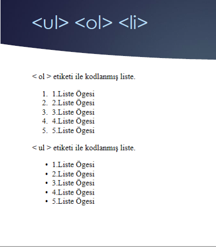
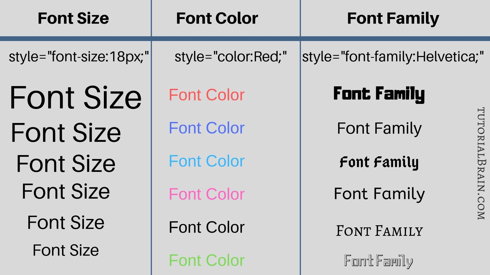

TABLE ETİKETİ
Web sayfamıza tablo eklemek için kullandığımız etikettir. Tablolar profesyonel web sayfalarının ayrılmaz öğelerindendir. Web üzerinde kullanılan tüm tablolar satırlar ve bu satırların içerisindeki sütunlardan oluşur. Bu etiket ile birlikte kullanılan kodları aşağıda tanımladım.
| GİRİLECEK KOD | GÖREVİ |
| border = "değer" | Tablonun kenarlığının varlığını belirler. |
| width = "değer" | Tablonun genişliği belirlenir. |
| height = "değer" | Tablonun yüksekliği belirlenir. |
| bgcolor = "renk" | Tablonun zemin rengi belirlenir. |
| cellpadding = "değer" | Tablo gözeleri içindeki öğelerin tablo kenarlıklarına uzaklığı belirlenir. |
| cellspacing = "değer" | Tablo gözeleri içindeki öğelerin tablo kenarlıklarına uzaklığı belirlenir. |
UL - OL - LI ETİKETLERİ
< FONT > < / FONT > ETİKETİ (METİN BİÇİMLENDİRME)
Başa Dön
6